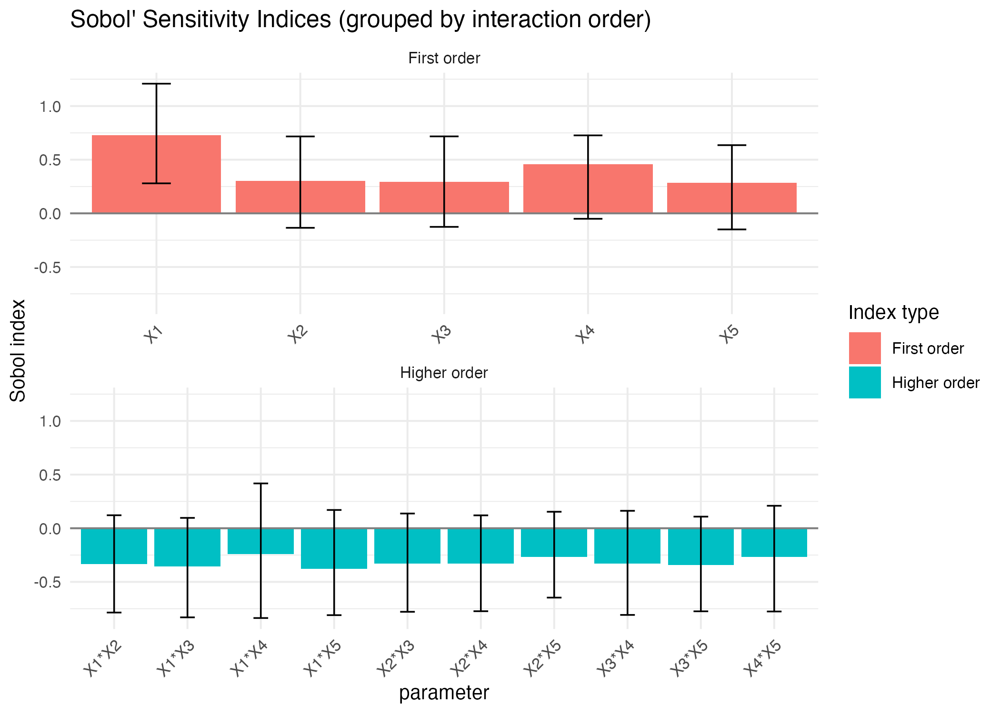
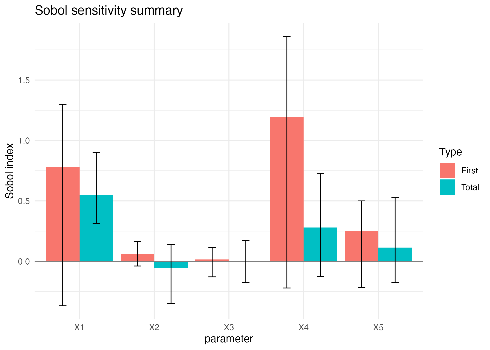
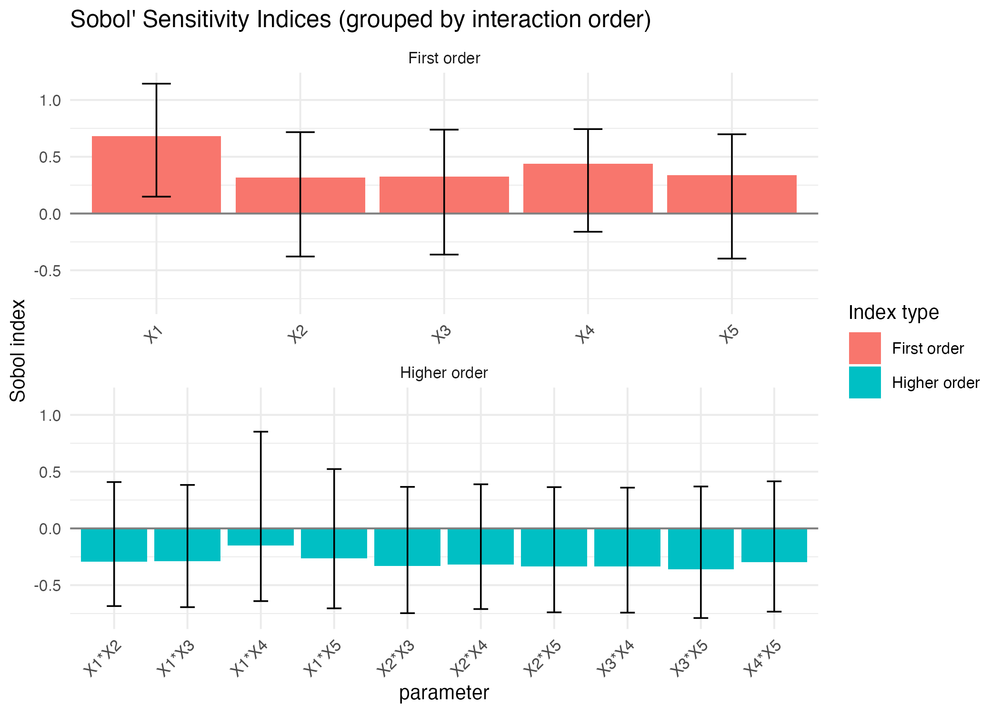
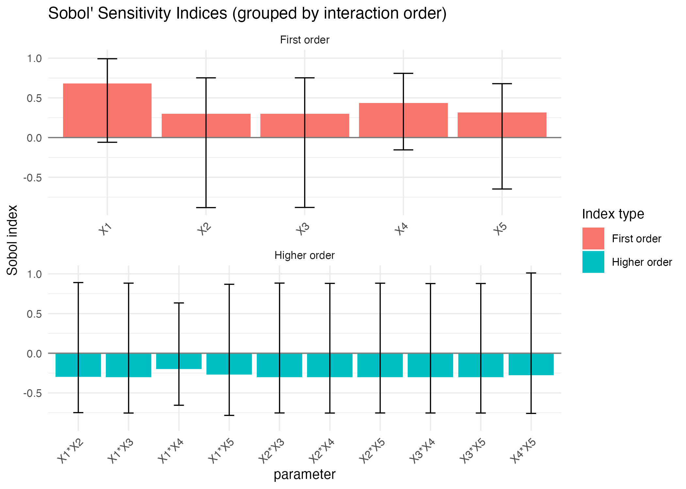
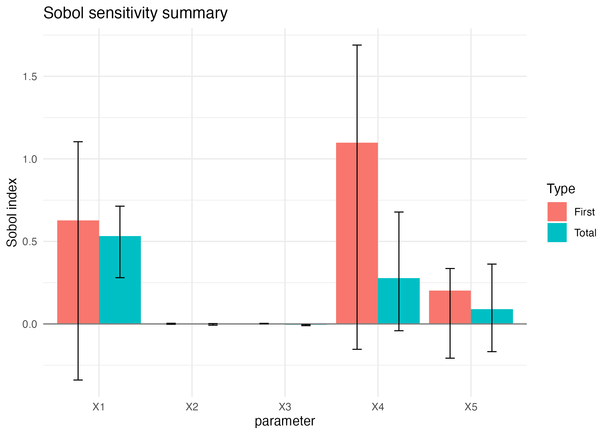
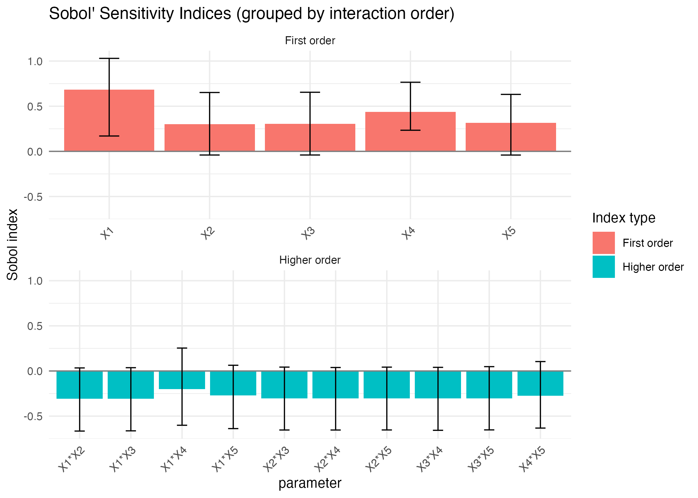
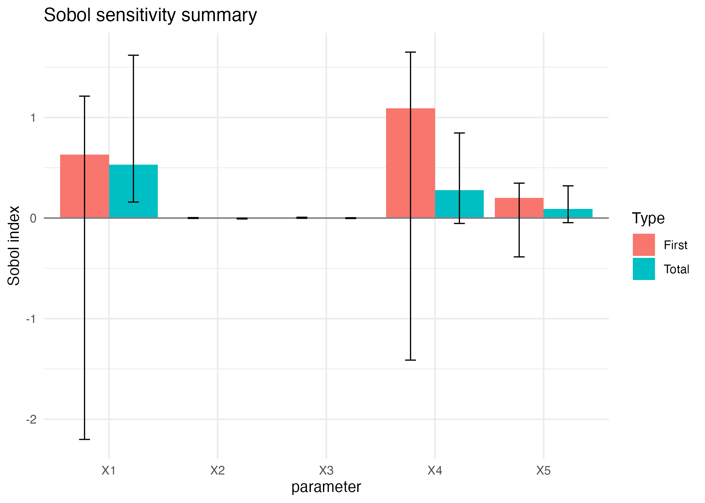

Sobol4R: Sobol indices for a stochastic process model
Frédéric Bertrand
Cedric, Cnam, Parisfrederic.bertrand@lecnam.net
2025-11-25
Source:vignettes/Sobol4R_vignette_process.Rmd
Sobol4R_vignette_process.RmdIntroduction
This vignette presents a simple stochastic process model in which the quantity of interest is the time needed to reach a given number of successes. The model is defined at the level of individual units and is driven by exponential and Bernoulli random variables.
The goal is to compute Sobol indices for this model when the distributional parameters are uncertain.
Process model
The elementary unit is implemented by sobol4r_one_unit.
The individual level model sobol4r_process_indiv aggregates
units up to a target number of successes.
Sobol4R:::one_unit(
lambda1 = 1 / 60,
lambda2 = 1 / 1012,
lambda3 = 1 / 72,
p1 = 0.18,
p2 = 0.5
)
#> [1] 0.000000000 0.005804484 0.000000000
process_fun_indiv(
X_indiv = c(
lambda1 = 1 / 60,
lambda2 = 1 / 1012,
lambda3 = 1 / 72,
p1 = 0.18,
p2 = 0.5
),
M = 50
)
#> [1] 7.957008Design for distributional parameters
We build two designs X1 and X2 for the
uncertain distributional parameters, which are interpreted row wise by
the process model.
n <- 200
draw_params <- function(n) {
data.frame(t(replicate(
n,
c(
1 / runif(1, min = 20, max = 100),
1 / runif(1, min = 24, max = 2000),
1 / runif(1, min = 24, max = 120),
runif(1, min = 0.05, max = 0.3),
runif(1, min = 0.3, max = 0.7)
)
)))
}
X1 <- draw_params(n)
X2 <- draw_params(n)
gensol_proc <- sobol4r_design(
X1 = X1,
X2 = X2,
order = 2,
nboot = 100
)
gensol_proc_s2007 <- sensitivity::sobol2007(
model=NULL,
X1 = X1,
X2 = X2,
nboot = 100
)Sobol indices based on a single trajectory
Yproc_1 <- process_fun_row_wise(gensol_proc$X, M = 50)
Yproc_s2007 <- process_fun_row_wise(gensol_proc_s2007$X, M = 50)
print(xproc_1)
#>
#> Call:
#> sensitivity::sobol(model = NULL, X1 = X1, X2 = X2, order = order, nboot = nboot)
#>
#> Model runs: 3200
#>
#> Sobol indices
#> original bias std. error min. c.i. max. c.i.
#> X1 0.7294194 0.00049123 0.2513380 0.27950991 1.2084699
#> X2 0.3004787 0.01349792 0.2051145 -0.13490482 0.7166861
#> X3 0.2957471 0.01592217 0.2070449 -0.12608586 0.7172049
#> X4 0.4559113 0.03160123 0.1843086 -0.05077489 0.7265388
#> X5 0.2830712 0.01852571 0.1932263 -0.14990173 0.6354526
#> X1*X2 -0.3343066 -0.01325800 0.2249487 -0.78555566 0.1210838
#> X1*X3 -0.3561771 -0.01217180 0.2339348 -0.83051127 0.0965282
#> X1*X4 -0.2413266 -0.02257892 0.2991820 -0.83675497 0.4176541
#> X1*X5 -0.3770702 -0.02718860 0.2554472 -0.80990616 0.1701954
#> X2*X3 -0.3276111 -0.01458000 0.2181632 -0.77870900 0.1372350
#> X2*X4 -0.3314252 -0.01645722 0.2121561 -0.77316732 0.1201331
#> X2*X5 -0.2658610 -0.01500736 0.1969157 -0.64640003 0.1536311
#> X3*X4 -0.3287880 -0.02359720 0.2308614 -0.80781454 0.1625249
#> X3*X5 -0.3408354 -0.01815007 0.2109176 -0.77419315 0.1081724
#> X4*X5 -0.2694589 -0.03160427 0.2357108 -0.77577433 0.2093851
autoplot.sobol(xproc_1, ncol = 1)
print(xproc_s2007)
#>
#> Call:
#> sensitivity::sobol2007(model = NULL, X1 = X1, X2 = X2, nboot = 100)
#>
#> Model runs: 1400
#>
#> First order indices:
#> original bias std. error min. c.i. max. c.i.
#> X1 0.78059654 0.026966701 0.41791588 -0.36770953 1.2991697
#> X2 0.06366468 -0.003512076 0.04786715 -0.03869592 0.1654700
#> X3 0.01459135 0.004726172 0.05483269 -0.12825874 0.1130782
#> X4 1.19394885 0.043419466 0.48734070 -0.22090457 1.8623500
#> X5 0.25311374 0.007218066 0.17030381 -0.21513710 0.4998055
#>
#> Total indices:
#> original bias std. error min. c.i. max. c.i.
#> X1 0.5496354427 -0.013111901 0.15117956 0.3141528 0.9015871
#> X2 -0.0564200705 0.017020644 0.12324393 -0.3508908 0.1377340
#> X3 0.0005891851 0.002411750 0.08555174 -0.1771735 0.1720782
#> X4 0.2799643974 0.003049293 0.18861940 -0.1241736 0.7284894
#> X5 0.1145422977 0.019339225 0.16685350 -0.1760436 0.5269174
autoplot.sobol2007(xproc_s2007)
Sobol indices based on a quantity of interest
Instead of relying on a single trajectory, we can define a quantity
of interest for each parameter vector, for instance the mean time to
reach the target number of successes. This is implemented by
sobol4r_process_qoi.
Yproc_2 <- process_fun_mean_to_M(gensol_proc$X, M = 50)
xproc_2 <- tell(gensol_proc, Yproc_2)
print(xproc_2)
#>
#> Call:
#> sensitivity::sobol(model = NULL, X1 = X1, X2 = X2, order = order, nboot = nboot)
#>
#> Model runs: 3200
#>
#> Sobol indices
#> original bias std. error min. c.i. max. c.i.
#> X1 0.6826528 0.005126550 0.2480252 0.1485698 1.1439030
#> X2 0.3176581 0.010674480 0.2562279 -0.3787595 0.7167677
#> X3 0.3258947 0.010487470 0.2590476 -0.3617596 0.7387714
#> X4 0.4393571 0.030845038 0.1988659 -0.1607166 0.7436733
#> X5 0.3392149 0.024193718 0.2463190 -0.3970669 0.6981421
#> X1*X2 -0.2939788 -0.015211110 0.2582148 -0.6842354 0.4084324
#> X1*X3 -0.2888089 -0.013018485 0.2550826 -0.6937357 0.3831304
#> X1*X4 -0.1505352 -0.044984037 0.3261704 -0.6404235 0.8520856
#> X1*X5 -0.2639892 -0.017353912 0.2690282 -0.7042267 0.5228493
#> X2*X3 -0.3326051 -0.009993783 0.2634304 -0.7466524 0.3659032
#> X2*X4 -0.3162005 -0.013351054 0.2591504 -0.7103273 0.3887268
#> X2*X5 -0.3336627 -0.011750294 0.2602581 -0.7391448 0.3635950
#> X3*X4 -0.3331674 -0.014007668 0.2625429 -0.7420036 0.3590781
#> X3*X5 -0.3592000 -0.011309098 0.2699409 -0.7894881 0.3693090
#> X4*X5 -0.2954550 -0.014510084 0.2700965 -0.7333147 0.4146974
autoplot.sobol(xproc_2, ncol = 1)
Qoi Mean
res_sobol_mean <- sobol4r_qoi_indices(
model = process_fun_row_wise,
X1 = X1,
X2 = X2,
qoi_fun = base::mean,
nrep = 1000,
order = 2,
nboot = 20,
M = 50,
type = "sobol"
)
print(res_sobol_mean)
#>
#> Call:
#> sensitivity::sobol(model = NULL, X1 = X1, X2 = X2, order = order, nboot = nboot)
#>
#> Model runs: 3200
#>
#> Sobol indices
#> original bias std. error min. c.i. max. c.i.
#> X1 0.6805953 0.06579726 0.2915201 -0.05931977 0.9930548
#> X2 0.3008859 0.06145805 0.3413658 -0.88236392 0.7524947
#> X3 0.3006451 0.06103511 0.3406389 -0.88045781 0.7527655
#> X4 0.4360898 0.03680453 0.2247240 -0.15502002 0.8089744
#> X5 0.3148892 0.03602053 0.2789583 -0.64795152 0.6789437
#> X1*X2 -0.2975536 -0.06198502 0.3420717 -0.74813653 0.8906007
#> X1*X3 -0.3005069 -0.06094272 0.3412032 -0.75336817 0.8830056
#> X1*X4 -0.2010131 -0.08869790 0.2984828 -0.65529321 0.6336699
#> X1*X5 -0.2684205 -0.04696034 0.3456393 -0.78315616 0.8685432
#> X2*X3 -0.3009403 -0.06143294 0.3414768 -0.75223685 0.8835731
#> X2*X4 -0.3014412 -0.06123680 0.3413067 -0.75356381 0.8799221
#> X2*X5 -0.3009248 -0.06137610 0.3412708 -0.75236900 0.8822591
#> X3*X4 -0.3007574 -0.06061473 0.3404276 -0.75275578 0.8777120
#> X3*X5 -0.3019780 -0.06057977 0.3402788 -0.75334627 0.8785105
#> X4*X5 -0.2758623 -0.05966790 0.3633708 -0.75818965 1.0111646
autoplot.sobol(res_sobol_mean, ncol = 1)
res_sobol2007_mean <- sobol4r_qoi_indices(
model = process_fun_row_wise,
X1 = X1,
X2 = X2,
qoi_fun = base::mean,
nrep = 1000,
nboot = 20,
M = 50,
type = "sobol2007"
)
print(res_sobol2007_mean)
#>
#> Call:
#> sensitivity::sobol2007(model = NULL, X1 = X1, X2 = X2, nboot = nboot)
#>
#> Model runs: 1400
#>
#> First order indices:
#> original bias std. error min. c.i. max. c.i.
#> X1 0.6274357275 1.933040e-02 0.3441016539 -0.3398362883 1.103774781
#> X2 0.0008242769 -2.249057e-04 0.0015807319 -0.0023759905 0.004029758
#> X3 0.0021233184 9.417988e-05 0.0009865046 0.0004880764 0.003496689
#> X4 1.0975117805 -5.208604e-02 0.4394763913 -0.1537345782 1.689410619
#> X5 0.2019065056 9.312831e-03 0.1290530635 -0.2074654193 0.335771533
#>
#> Total indices:
#> original bias std. error min. c.i. max. c.i.
#> X1 0.532059804 5.967415e-03 0.128915919 0.280135144 0.713385892
#> X2 -0.002240093 5.903650e-04 0.002408428 -0.007549059 0.002190784
#> X3 -0.006024882 -2.606107e-05 0.001853114 -0.010555671 -0.003532359
#> X4 0.276844920 3.518714e-02 0.201009767 -0.041162140 0.677923530
#> X5 0.089923585 9.174677e-03 0.145860899 -0.167883254 0.362529675
autoplot.sobol2007(res_sobol2007_mean)
Qoi Median
res_sobol_median <- sobol4r_qoi_indices(
model = process_fun_row_wise,
X1 = X1,
X2 = X2,
qoi_fun = stats::median,
nrep = 1000,
order = 2,
nboot = 20,
M = 50,
type = "sobol"
)
print(res_sobol_median)
#>
#> Call:
#> sensitivity::sobol(model = NULL, X1 = X1, X2 = X2, order = order, nboot = nboot)
#>
#> Model runs: 3200
#>
#> Sobol indices
#> original bias std. error min. c.i. max. c.i.
#> X1 0.6838808 0.01427035 0.2499123 0.17006140 1.03003325
#> X2 0.3014619 -0.05854112 0.2068283 -0.04052554 0.65190549
#> X3 0.3040197 -0.05880441 0.2075153 -0.04033192 0.65456686
#> X4 0.4366072 -0.05765811 0.1426287 0.23387014 0.76553497
#> X5 0.3140690 -0.05265660 0.1807080 -0.04093714 0.63087985
#> X1*X2 -0.3070862 0.05959257 0.2079712 -0.66535925 0.03393730
#> X1*X3 -0.3086261 0.05931663 0.2088386 -0.66287107 0.03655093
#> X1*X4 -0.2024409 0.04294745 0.2480517 -0.60097971 0.25398309
#> X1*X5 -0.2691735 0.07250931 0.2014423 -0.63794781 0.06340764
#> X2*X3 -0.3053052 0.05812156 0.2080119 -0.65361007 0.04307241
#> X2*X4 -0.3019594 0.05897805 0.2063651 -0.65378906 0.03870985
#> X2*X5 -0.3021756 0.05851692 0.2072934 -0.65305783 0.04274170
#> X3*X4 -0.3040339 0.05914784 0.2074400 -0.65703109 0.04036785
#> X3*X5 -0.3030301 0.05775997 0.2085067 -0.65238401 0.04808432
#> X4*X5 -0.2749564 0.05147778 0.2196955 -0.63229036 0.10439382
autoplot.sobol(res_sobol_median, ncol = 1)
res_sobol2007_median <- sobol4r_qoi_indices(
model = process_fun_row_wise,
X1 = X1,
X2 = X2,
qoi_fun = stats::median,
nrep = 1000,
nboot = 20,
M = 50,
type = "sobol2007"
)
print(res_sobol2007_median)
#>
#> Call:
#> sensitivity::sobol2007(model = NULL, X1 = X1, X2 = X2, nboot = nboot)
#>
#> Model runs: 1400
#>
#> First order indices:
#> original bias std. error min. c.i. max. c.i.
#> X1 0.631136293 0.3518396529 0.892602725 -2.201165768 1.211889780
#> X2 0.001271101 0.0009124744 0.002369515 -0.003964884 0.004411122
#> X3 0.002570528 0.0004359652 0.002344942 -0.002486295 0.007781618
#> X4 1.090728028 0.2415061369 0.732729339 -1.412514753 1.649640844
#> X5 0.201706947 0.0879264537 0.206641333 -0.386047563 0.346867853
#>
#> Total indices:
#> original bias std. error min. c.i. max. c.i.
#> X1 0.531523669 -0.0729994672 0.331167907 0.158962886 1.618870406
#> X2 -0.004751456 -0.0001029459 0.002192107 -0.009031976 -0.001528655
#> X3 -0.002405476 -0.0006439060 0.002279635 -0.004597536 0.002993045
#> X4 0.278546795 -0.1029523197 0.255775665 -0.053865835 0.845646247
#> X5 0.089823287 -0.0084978131 0.093193129 -0.046021882 0.320166482
autoplot.sobol2007(res_sobol2007_median)